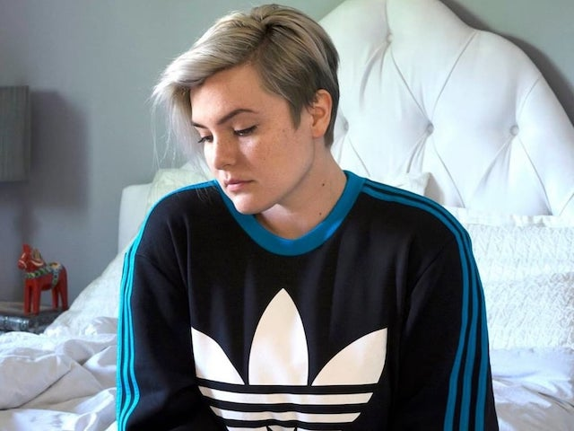

About Me
Chicago based photographer whose travels and studies in Stockholm and London have influenced and continue to inspire her creative vision. Shauna creates her own work in the realm of fine art, as well as fashion editorial, pushing the boundaries of current style and trend. While working on personal projects, Shauna collaborates with artists as a Photographic Retoucher and Digital Capture Technician.
Available for freelance as well as artist collaboration. Please contact for more information.
Connect with Me